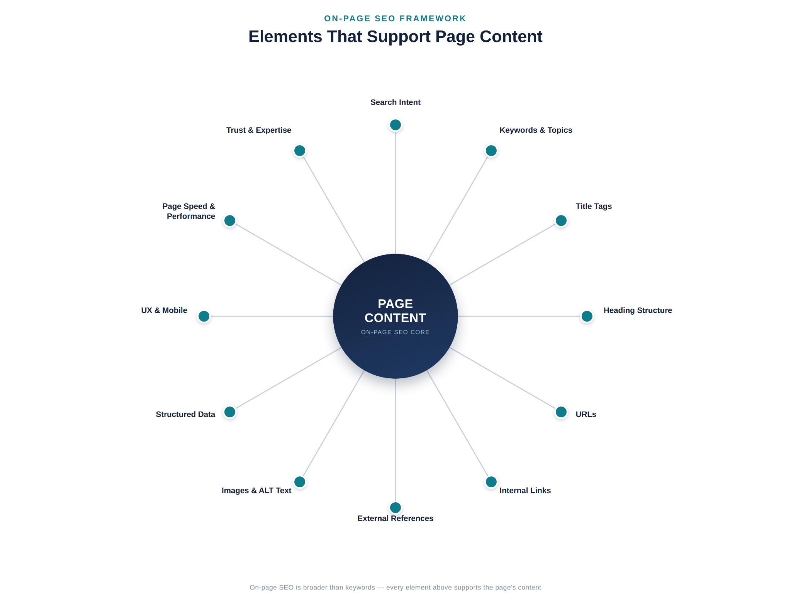
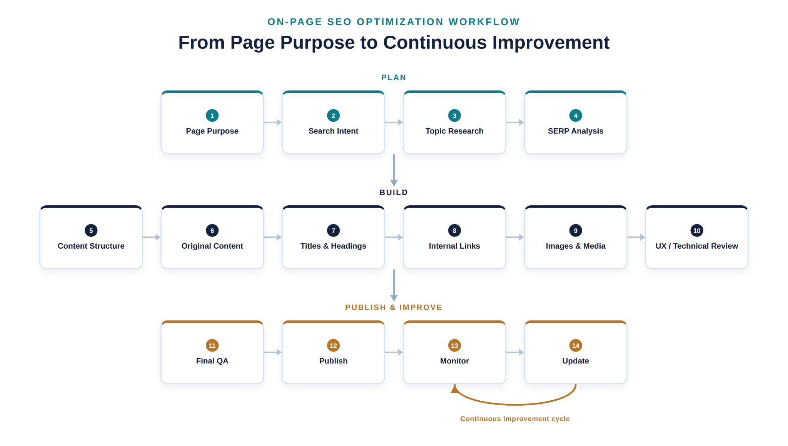
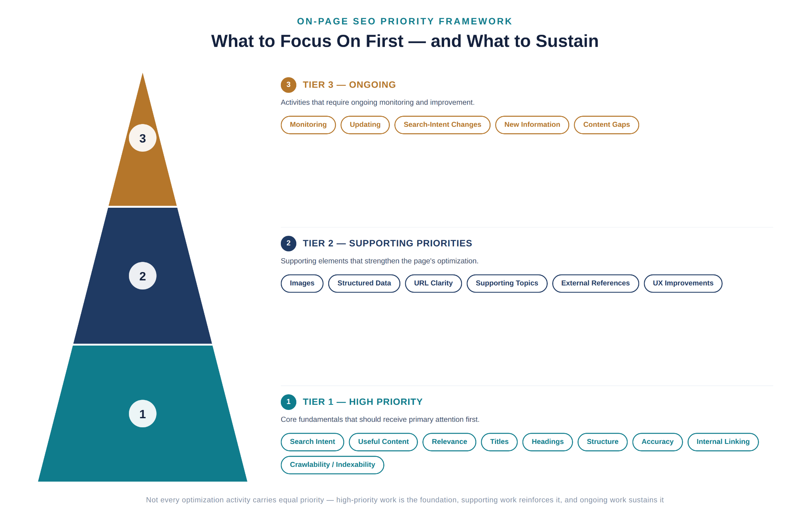

What Is On-Page SEO? A Complete Guide
On-page SEO is the practice of optimizing the content and page-level elements of a webpage -- things like the title, headings, body content, URL, and internal links -- so that both users and search engines can understand what the page is about and find it useful.
It's one of three broad categories of SEO, alongside technical SEO and off-page SEO. Of the three, on-page SEO is the one you have the most direct control over, because it lives on the page itself: the words you write, the structure you choose, and the way you organize information for the person reading it.
This guide explains what on-page SEO actually involves, why it matters, and -- most importantly -- how to apply it to a real page from start to finish.
What Is On-Page SEO?
On-page SEO (sometimes called on-site SEO) refers to the optimization work done directly on a webpage to improve its relevance, clarity, and usability for both readers and search engines. It covers two connected areas: the content itself (what the page says and how well it answers the reader's question) and the page elements that support that content (title tags, headings, URLs, internal links, images, and similar HTML-level details).
The two work together. A page can have excellent writing, but if the title tag is vague or the headings are disorganized, search engines and readers alike may struggle to understand what the page offers. Conversely, a page can have a perfectly optimized title tag and still fail if the content underneath doesn't actually answer the reader's question. On-page SEO is the discipline of making sure both halves -- substance and structure -- are working in the same direction.
As a quick example: imagine a local bakery publishes a page about custom birthday cakes. On-page SEO would involve making sure the page clearly addresses what a visitor searching for "custom birthday cakes" wants to know (flavors, pricing, ordering process, turnaround time), and that the title, headings, URL, and internal links all reflect that same topic clearly and consistently.
Why Is On-Page SEO Important?
On-page SEO matters because it directly affects whether the right people can find your content and whether they get value from it once they arrive.
- Relevance and search intent. Search engines try to match a person's query with the page that best satisfies it. On-page SEO is how you signal -- clearly and honestly -- that your page addresses that specific need.
- Search engine understanding. Search engines rely on your content, headings, and structure to understand what a page is about. Clear, well-organized on-page elements make that job easier, which supports accurate indexing.
- User experience. Good on-page SEO and good user experience overlap heavily. A page with a logical structure, clear headings, and useful content is easier for both people and search engines to navigate.
- Content quality and trust. Readers judge a page by whether it's accurate, complete, and genuinely helpful. On-page SEO practices like covering a topic thoroughly and citing credible information support that trust.
- Discoverability. Elements like descriptive titles and well-chosen internal links help a page get found -- both by search engines crawling your site and by readers browsing it.
It's worth being direct about what on-page SEO does not guarantee. No single element -- not a keyword, not a title tag, not a heading -- guarantees a ranking position. Search engines weigh many factors, and on-page SEO is best understood as removing obstacles and adding clarity, not as a formula for outranking competitors.
What Is the Difference Between On-Page, Technical, and Off-Page SEO?
These three categories are related, but they are not interchangeable, and beginners often blur the lines between them. Here's a clear breakdown:
| Category | What It Covers | Examples |
|---|---|---|
| On-page SEO | Optimization of content and page-level elements | Titles, headings, body content, URLs, internal links, images, structured data on a specific page |
| Technical SEO | The infrastructure that helps search engines crawl, render, understand, and index a site | Site architecture, crawlability, indexing, redirects, sitemaps, mobile rendering, structured data implementation at a site-wide level |
| Off-page SEO | External signals associated with your site | Backlinks from other websites, brand mentions, and other external authority signals |
A simple way to think about it: on-page SEO is what you control on the page itself, technical SEO is what allows search engines to access and interpret your site correctly in the first place, and off-page SEO is what other sites and sources say about you.
The three overlap at the edges. For example, structured data can be considered both a technical implementation detail and an on-page element, depending on how it's applied to a specific page. Page speed is often discussed in the same breath as on-page SEO because it affects individual pages, but the underlying fixes are frequently technical (server response times, code efficiency, hosting). The goal isn't to memorize a rigid boundary -- it's to understand that a slow site isn't necessarily an "on-page content" problem, and a weak backlink profile isn't something you can fix by rewriting a page. Each category calls for a different kind of work.
What Does On-Page SEO Include?
On-page SEO is made up of several elements that work together rather than in isolation. Below is a breakdown of each one -- what it is, why it matters, and what a beginner should actually do about it.
Search Intent
Search intent is what a person actually wants when they type a query. Before writing or optimizing anything, it's worth asking: is this person looking for a quick definition, a step-by-step guide, a product to buy, or a specific business to visit?
This matters because a page can be well written and still fail if it answers the wrong question. A beginner should look at what's currently ranking for a target query and notice the format, depth, and angle those pages take -- that's a strong signal of what searchers and search engines consider a good match.
Content Quality and Relevance
Content quality means the page is accurate, thorough enough to be genuinely useful, and written for the person reading it rather than stuffed with keywords for a search engine. Relevance means the content actually stays focused on what the page claims to be about.
This is arguably the foundation of on-page SEO -- every other element (titles, headings, links) exists to support and organize good content, not to replace it. A beginner should focus on answering the reader's question completely and clearly before worrying about anything else on this list.
Keyword and Topic Optimization
Keyword and topic optimization means using the language your audience actually searches for -- typically identified through keyword research -- along with the related terms and subtopics that naturally belong to the subject. This is different from repeating one exact phrase as often as possible.
Search engines have moved well beyond simple keyword matching, so the goal is topical completeness -- covering the primary subject and its natural supporting details -- rather than a specific keyword count or density. A beginner should identify the primary topic of the page, along with a handful of closely related subtopics a thorough answer would naturally include, and write toward that.
Title Tags
The title tag is the clickable headline shown in search results and browser tabs. It's often the first thing a searcher sees, and it's a strong signal to search engines about the page's topic.
A good title tag is specific, accurately describes the page, and is written for the person scanning search results -- not stuffed with repeated keywords. A beginner should write a title that clearly states what the page is about and would make sense to a real reader deciding whether to click.
Meta Descriptions and Search Snippets
The meta description is the short summary that can appear under the title in search results. Search engines don't always use it as written (they sometimes generate a snippet from the page content instead), but a well-written one still influences whether someone clicks.
A beginner should write a meta description that honestly summarizes the page's value in a sentence or two. It won't act as a ranking trick, but it plays a real role in click-through from the search results page.
Heading Structure
Headings (H1, H2, H3, and so on) organize a page into a logical hierarchy. The H1 typically states the main topic, and subheadings break the content into digestible sections.
Good heading structure helps readers scan a page and find what they need, and it helps search engines understand how the content is organized. There's no required number of headings -- the right number is whatever the topic needs to be covered clearly. A beginner should use one clear H1, then organize supporting sections under logical H2s and H3s.
URLs
A URL is the web address of a page. A descriptive, readable URL helps both users and search engines understand what a page is about at a glance.
This is a minor supporting element, not a major ranking lever -- Google's own guidance treats descriptive URLs as a usability aid rather than a keyword trick. A beginner should keep URLs short, readable, and reflective of the page's topic, and avoid long strings of parameters or unrelated words.
Internal Linking
Internal links connect one page on your site to another. They help search engines discover and understand the relationship between pages, and they help readers navigate to related information.
Thoughtful internal linking -- using descriptive anchor text and linking where it genuinely helps the reader -- is one of the more underused on-page tools. A beginner should link to genuinely related pages using anchor text that describes the destination, rather than generic phrases like "click here."
External Links
External links point from your page to other websites. Linking to credible, relevant sources can support accuracy and give readers additional context.
This isn't about link quantity -- it's about linking where it adds real value, such as citing a primary source or pointing to an authoritative reference. A beginner should link out when it genuinely helps substantiate a claim or point the reader to something useful, not as a routine SEO checklist item.
Image SEO and ALT Text
Image SEO includes using relevant images, compressing them appropriately, and writing descriptive ALT text. ALT text describes an image for people using screen readers and provides search engines with context about the image's content.
Beyond accessibility and search visibility, well-optimized images also affect page load performance. A beginner should use images that add real value to the content, compress them reasonably, and write ALT text that accurately describes what's shown.
Structured Data
Structured data is a standardized code format (such as schema.org markup) added to a page to help search engines understand specific types of content -- for example, a recipe, an FAQ, or a product listing -- more precisely.
Structured data doesn't guarantee any particular search feature, but where it's genuinely applicable, it can help search engines interpret content correctly and may make certain rich results possible. A beginner doesn't need structured data on every page -- only where it accurately describes the content type.
User Experience and Mobile Usability
User experience covers how easy a page is to read, navigate, and use -- including on mobile devices, where most searches now happen. This includes readable text size, easy navigation, and content that isn't obstructed by intrusive elements.
Since a large share of search traffic is mobile, a page that's difficult to use on a phone undermines everything else on this list. A beginner should test how a page actually looks and behaves on a mobile screen, not just a desktop browser.
Page Speed and Core Web Vitals
Page speed refers to how quickly a page loads and becomes usable. Core Web Vitals are a specific set of Google metrics that measure aspects of loading performance, interactivity, and visual stability.
This is an area where on-page and technical SEO overlap: some fixes (like image compression) are on-page adjustments, while others (like server performance or code delivery) are technical in nature. Core Web Vitals are also a metric set that Google has updated over time, so it's worth checking current, official guidance rather than relying on older explanations. A beginner should treat slow-loading pages as a priority to investigate, without assuming every speed fix belongs to "content" work.
Trust, Expertise, and First-Hand Experience
This refers to signals that a page and its author are credible and knowledgeable about the topic -- sometimes discussed under the acronym E-E-A-T (experience, expertise, authoritativeness, trustworthiness). This isn't a single measurable score; it's a concept describing the qualities that make content trustworthy to both readers and search systems.
Practical signals include accurate information, clear authorship where relevant, evidence of real experience with the topic, and content that doesn't mislead the reader. A beginner should focus on being accurate and transparent rather than trying to "optimize for E-E-A-T" as if it were a technical checkbox.

How Do You Optimize a Page for On-Page SEO?

Understanding the individual elements above is only half the picture. The other half is knowing how to bring them together when you're actually building or improving a page. Below is a practical, end-to-end workflow.
1. Define the Page's Purpose
Before writing anything, decide what this specific page is supposed to accomplish and for whom. Is it meant to inform, help someone compare options, or lead them toward a specific action? A clear purpose keeps every later decision -- from the title to the internal links -- pointed in the same direction, and it prevents the page from trying to be everything to everyone.
2. Understand Search Intent
Look at what the target audience is actually trying to find when they search for this topic. Review what currently ranks for the relevant query and pay attention to the format, depth, and angle those results take. Matching search intent is a prerequisite for optimization -- a page can be well-written and still underperform if it answers a different question than the one being asked.
3. Research the Primary Topic and Supporting Topics
Identify the one primary topic the page is built around, then map out the supporting subtopics a thorough answer would naturally include. For a page about "on-page SEO," for example, supporting topics might include title tags, headings, and internal linking. This step is what separates a shallow page from a genuinely complete one, and it's also what keeps keyword use natural -- you're covering real subtopics, not repeating a phrase.
4. Analyze the SERP
Look at the search results page for your target query: what types of results appear (articles, videos, tools, comparisons), what questions show up in "People Also Ask," and what gaps exist in the current top results. This tells you what a competitive page needs to include -- and where you can add something the existing results don't.
5. Build the Content Structure
Before writing full paragraphs, outline the page: the H1, the main H2 sections, and the supporting H3s underneath them. A logical structure, decided in advance, makes the writing process faster and ensures the final page reads as an organized whole rather than a collection of loosely related points.
6. Create Helpful, Original Content
Write the actual content, focused on answering the reader's question clearly, accurately, and completely. Use natural language rather than forcing keyword phrases into every sentence. This is the step where quality is decided -- structure and technical elements support good content, but they can't substitute for it.
7. Optimize Titles and Headings
Write a title tag and H1 that clearly and specifically describe the page, and refine your headings so each one accurately previews the section beneath it. Clear titles and headings help readers scan the page and help search engines understand its structure -- and they're often the first thing both audiences see.
8. Improve Internal Linking
Add links to genuinely related pages on your site, using descriptive anchor text. This helps readers find more of what they need and helps search engines understand how your content connects. Internal linking is frequently under-used -- it's worth a deliberate pass rather than an afterthought.
9. Optimize Images and Media
Add images or media that genuinely support the content, compress them for reasonable file size, and write accurate, descriptive ALT text. This step supports both accessibility and page performance, and it reinforces the page's topic for search engines.
10. Review User Experience and Relevant Technical Elements
Check how the page performs on mobile, whether it loads reasonably fast, and whether structured data is appropriate for the content type. Not every page needs every technical enhancement -- the goal is to catch anything that would frustrate a real visitor or block a search engine from understanding the page correctly.
11. Perform a Final On-Page SEO Check
Before publishing, review the page as a whole: does the title match the content, is the intent satisfied, are headings logical, are links working, is the content accurate and free of errors? This step catches the small inconsistencies that are easy to miss while building the page section by section.
12. Publish, Monitor, and Improve
Publish the page, then track how it performs over time using tools like Google Search Console and analytics. On-page SEO isn't a one-time task -- pages benefit from periodic review as search intent shifts, information ages, or performance data reveals room for improvement.
A worked example. Imagine a small business builds a page for "custom birthday cakes." The page's purpose is to inform local customers about ordering options and convert interested visitors into inquiries. Research shows the primary topic is custom birthday cake ordering, with supporting topics like flavors, design options, pricing ranges, and lead time. The title tag becomes something like "Custom Birthday Cakes -- Flavors, Designs & Ordering Guide," and the H1 mirrors it closely. Supporting H2s cover flavor options, design and customization, pricing and lead time, and how to place an order. The URL is kept short and descriptive. Internal links point to a general cakes and desserts page and a contact page, using anchor text like "view our full dessert menu" rather than "click here." Images show real examples of finished cakes, each with ALT text describing the specific design. A meta description summarizes the page honestly: what's offered, and how to order. Before publishing, the page is checked on a phone screen, reviewed for accuracy, and scanned once more to confirm every section still matches the stated purpose. This is what it looks like when the individual on-page elements reinforce each other rather than existing as disconnected checklist items.
What Are the Most Important On-Page SEO Factors?

Not every on-page element carries equal weight, and treating them as if they do can waste time on minor details while more important fundamentals go unaddressed. The framework below is a practical way to prioritize -- not a claim about exact ranking weight, which no outside party can measure precisely.
High priority -- the fundamentals that most directly affect whether a page satisfies a search and a searcher
- Search intent alignment
- Genuinely useful, accurate content
- Topical relevance
- Clear, specific titles
- Clear, logical headings
- Strong overall content structure
- Accurate, up-to-date information
- Useful internal linking
- Crawlability and indexability, where relevant to the page
Supporting priorities -- elements that reinforce the fundamentals and improve the overall experience
- Image optimization and ALT text
- Structured data, where applicable
- URL clarity
- Coverage of supporting subtopics
- Relevant external references
- User experience refinements
Ongoing priorities -- work that continues after a page is published
- Performance monitoring
- Content updates as information changes
- Adjustments when search intent shifts
- Incorporating new information as it becomes available
- Closing content gaps identified after publishing
A useful rule of thumb for beginners: if you're short on time, address the high-priority items first. A page with excellent images but weak content, or a well-optimized URL attached to a page that doesn't actually satisfy search intent, will underperform a plainer page that gets the fundamentals right.
Common On-Page SEO Mistakes to Avoid
Keyword Stuffing
Repeating a keyword or phrase unnaturally throughout a page, in an attempt to signal relevance to search engines, tends to make content harder to read and can undermine trust. Search engines are built to recognize genuinely relevant, well-written content -- not to reward repetition. Aim for natural language that covers a topic thoroughly instead.
Writing for Search Engines Instead of People
Some pages are structured around what a writer assumes search engines want, rather than what a reader actually needs. This usually produces content that feels mechanical or incomplete. Writing for the person reading the page first tends to satisfy both audiences.
Ignoring Search Intent
A page can be accurate and well-written and still underperform if it answers a different question than the one being searched. Before optimizing anything else, confirm the page actually matches what searchers expect to find.
Duplicate or Thin Content
Thin content doesn't say enough to be genuinely useful, and duplicate content -- whether copied from elsewhere or repeated across your own site -- creates confusion about which page should be considered the authoritative source. Each page should offer distinct, substantial value.
Poor Internal Linking
Pages with few or no internal links, or links that use vague anchor text like "click here," miss an opportunity to help both readers and search engines understand how content connects. Deliberate, descriptive internal linking is a low-effort, high-value fix.
Weak Titles and Headings
Vague titles ("Home," "Untitled Page," "Blog Post") or headings that don't accurately describe the content beneath them make it harder for readers to scan a page and for search engines to understand its structure. Specific, descriptive titles and headings solve this.
Ignoring Images and ALT Text
Skipping ALT text or using generic file names and descriptions ("image1.jpg") misses both an accessibility requirement and a chance to reinforce the page's topic. Accurate, descriptive ALT text should be standard practice.
Ignoring Mobile and User Experience
A page that's difficult to read or navigate on a phone will frustrate a large share of visitors, since mobile search makes up a substantial portion of overall traffic. Testing pages on mobile devices -- not just desktop -- should be a routine step.
Failing to Update Important Content
Publishing a page once and never revisiting it can leave outdated information live indefinitely, especially on topics that change over time. Important pages benefit from periodic review, not just a one-time publish.
Creating Multiple Pages With Overlapping Search Intent
Publishing several pages that target essentially the same search intent can cause them to compete with each other rather than support the site as a whole -- a problem known as keyword cannibalization, covered in more detail below.
A Note on Keyword Cannibalization
Keyword cannibalization happens when multiple pages on the same website target substantially overlapping search intent, causing them to compete against each other instead of one clear page serving that need. It's important to be precise here: using the same word or phrase on two different pages does not automatically cause cannibalization -- the issue arises when the pages are trying to satisfy the same underlying search intent rather than serving genuinely different purposes.
Common ways to address it include clearly differentiating each page's intent and angle, improving how each page is targeted so they serve distinct purposes, consolidating overlapping pages into one stronger page when that makes sense, or restructuring content so each page has a clear, unique role. Before creating a new page on a topic you've already covered, it's worth checking whether an existing page could simply be expanded or updated instead.
On-Page SEO Checklist
Use this as a final review before publishing or updating a page:
- Search intent has been researched and matched
- The page's purpose is clear and specific
- A primary topic has been identified
- Relevant supporting topics are covered
- Content is accurate, complete, and genuinely useful
- The title tag is clear, specific, and accurate
- The H1 matches the page's topic
- Headings are logical and organized
- The URL is short, descriptive, and readable
- Internal links use descriptive anchor text and point to genuinely related pages
- External references (where used) point to credible, relevant sources
- Images support the content and are reasonably compressed
- ALT text accurately describes each image
- The page works well on mobile devices
- Overall user experience is smooth and free of obstructions
- Structured data is used where it genuinely applies
- Relevant technical checks (loading speed, crawlability) have been reviewed
- Information has been fact-checked for accuracy
- Content is original, not duplicated from another page or source
- A final read-through has confirmed everything is consistent and complete
How Do You Measure On-Page SEO Performance?
Once a page is live, several data points can help you understand how it's performing:
Search impressions show how often a page appeared in search results for relevant queries. Clicks show how many people actually visited from those results. Click-through rate (CTR) is the relationship between the two, and can reflect how compelling your title and meta description are to searchers. Average position gives a general sense of where a page tends to appear, though it can fluctuate for many reasons. Indexing status confirms whether a page is actually eligible to appear in search results at all. Organic traffic tracks visits coming specifically from search. Engagement metrics (like time on page or scroll depth) can hint at whether content is holding a reader's attention. Conversions, where relevant, measure whether the page is achieving its actual business purpose -- not just attracting visits.
No single metric tells the whole story on its own. A page with strong impressions but a low CTR might need a better title or description. A page with solid traffic but weak engagement might not be satisfying the reader once they arrive. Looking at these signals together, over time, gives a much more reliable picture than any one number in isolation -- and none of them can be used to promise a future ranking outcome.
It's also worth briefly noting how search itself is evolving: modern search results can include AI-generated summaries alongside traditional listings. There's no verified, guaranteed method for getting featured in these summaries, and it's not something to chase as a separate tactic. The same fundamentals that support strong on-page SEO -- clear, accurate, well-structured, genuinely useful content -- are also what help any system, human or automated, understand and represent your information correctly. For a closer look at how these summaries actually select and cite sources, see our guide on practical strategies for showing up in Google AI Overviews.
How Often Should You Update On-Page SEO?
There's no universal fixed schedule for updating a page -- the right cadence depends on the topic and how the page is performing. That said, a few situations are strong signals that a review is due:
- The information on the page has become outdated or inaccurate
- Search intent for the target query appears to have shifted
- Performance (impressions, clicks, or rankings) has declined
- Competing pages have added coverage yours is missing
- New, relevant information has become available since the page was published
- A content review reveals gaps in subtopics the page should address
- The page no longer seems to satisfy users as well as it once did
Updating for the sake of "freshness" alone -- without a real reason -- isn't a productive use of time. The goal of a content audit is to find pages that genuinely need improvement, then make specific, meaningful updates: correcting outdated details, filling real content gaps, improving structure, or strengthening internal links. Treat this as ongoing maintenance rather than a one-time project, especially for pages that matter most to your site's traffic or business goals.
Conclusion
On-page SEO isn't a checklist of isolated tricks -- it's a connected system. Search intent shapes what a page should say. The primary topic and supporting subtopics shape how it's structured. Titles, headings, URLs, and internal links exist to organize and reinforce that content, not to substitute for it. And once a page is live, monitoring and updating keep it aligned with how search behavior and available information continue to change.
The most reliable approach is also the simplest one: understand what the person searching actually needs, build a page that genuinely satisfies that need, and use on-page elements to make that value clear and easy to find -- for readers and search engines alike. There's no shortcut that replaces useful, accurate, well-organized content, and no single element on this page guarantees a specific outcome in search results. What on-page SEO can do is remove friction and add clarity, which puts a genuinely good page in the best possible position to be found and used.
Frequently Asked Questions
What is on-page SEO?
On-page SEO is the practice of optimizing a webpage's content and page-level elements -- such as titles, headings, body content, URLs, and internal links -- so that both users and search engines can understand and find value in the page.
Why is on-page SEO important?
It helps ensure a page is relevant to what people are searching for, easy for search engines to understand, and genuinely useful once a visitor arrives -- all of which support discoverability and organic visibility, without guaranteeing any specific ranking outcome.
What are examples of on-page SEO?
Examples include writing a clear title tag, structuring content with logical headings, using descriptive URLs, adding internal links with meaningful anchor text, writing accurate ALT text for images, and creating content that thoroughly answers the searcher's question.
What is the difference between on-page and off-page SEO?
On-page SEO covers what you control directly on a webpage, such as content and HTML elements. Off-page SEO covers external signals associated with your site, such as backlinks and mentions from other websites.
Is keyword density important for on-page SEO?
No. There's no ideal keyword density to hit. Modern on-page SEO focuses on covering a topic naturally and thoroughly rather than repeating a specific phrase a set number of times, which can come across as keyword stuffing.
Do keywords need to appear in every heading?
No. Headings should accurately describe the section beneath them. Forcing a keyword into every heading, even when it doesn't fit naturally, tends to hurt readability without providing any real benefit.
How important are title tags?
Title tags are one of the more important on-page elements, since they're often a searcher's first impression of a page and a clear signal to search engines about the page's topic. They should be specific, accurate, and written for a human reader.
Does a meta description affect rankings?
Search engines have indicated that meta descriptions aren't a direct ranking factor, but a well-written one can improve click-through rate from the search results page, which is still valuable even if it isn't a ranking signal itself.
How important is ALT text?
ALT text serves an important accessibility function for people using screen readers, and it also helps search engines understand image content. It should accurately describe the image rather than being skipped or stuffed with keywords.
How often should you update on-page SEO?
There's no fixed schedule. A page is worth revisiting when its information becomes outdated, its performance declines, search intent shifts, or a content review reveals gaps that a stronger page should address.